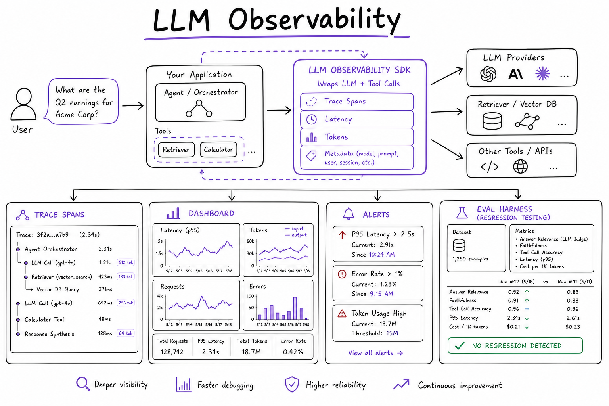
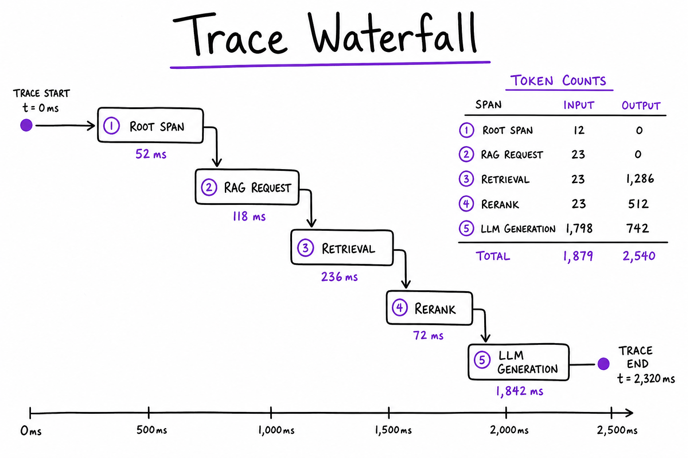
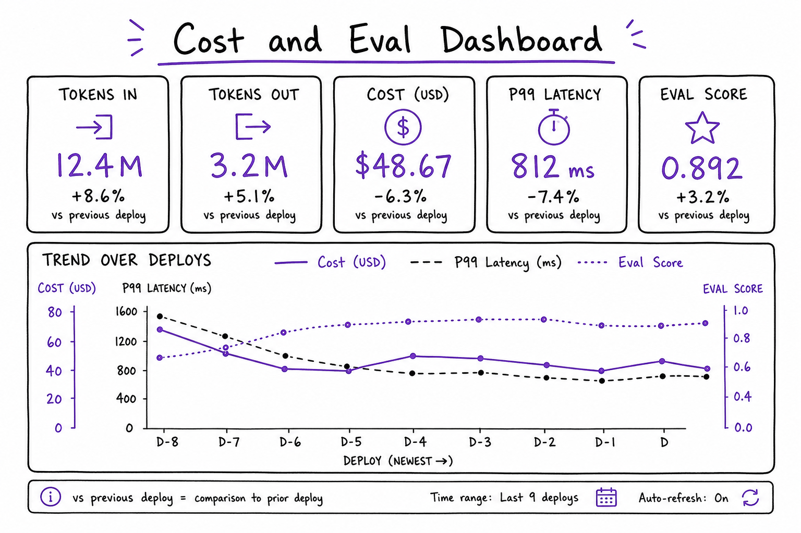

LLM Observability // AI Tech
Trace, evaluate, and debug LLM apps: LangSmith, Langfuse, OpenTelemetry, token/cost tracking, golden-set eval, online feedback, and production dashboards for RAG and agents.

Observability stack: SDK wraps LLM/retriever/tool calls → trace spans (latency, tokens, I/O) → dashboard + alerts → eval harness regression on deploy.
01 — What & Why
LLM apps fail silently — wrong retrieval, tool loops, prompt drift. Observability = traces (what happened), evals (is quality good), metrics (cost/latency). Required before prod launch.
01a — Core Concepts
| Term | Definition | Gotcha |
|---|---|---|
| Trace | Tree of spans for one user request | Include retrieval + LLM + tools |
| Span | Single operation with inputs/outputs | PII redaction policy |
| Golden set | Labeled Q&A for regression eval | Update quarterly |
| Feedback | Thumbs down / edit in UI | Close loop to dataset |
01b — API Surface
# LangSmith — env vars auto-trace LangChain
os.environ["LANGCHAIN_TRACING_V2"] = "true"
os.environ["LANGCHAIN_PROJECT"] = "rag-prod"
# Langfuse
from langfuse.decorators import observe
@observe()
def rag_pipeline(query: str):
...
# OpenTelemetry + custom spans
with tracer.start_as_current_span("retrieval") as span:
span.set_attribute("top_k", 20)
docs = retriever.invoke(query)02 — When to Use / When NOT
| Case | Obs stack? | Min |
|---|---|---|
| Prod RAG/agent | Required | Langfuse/LangSmith |
| One-off script | Optional | Print debugging |
03 — Architecture
App SDK → trace collector → storage (ClickHouse/Postgres/S3) → UI + alert rules → eval CI on golden set.
04 — Deep Dive: Tracing

Trace waterfall: root span RAG request → retrieval span → rerank → LLM generation with token counts
Tag spans: user_id hash, tenant, prompt_version, model. Link to LangGraph node names.
05 — Cost Tracking

Dashboard: tokens in/out per model, cost USD, p99 latency, eval score trend over deploys
Aggregate usage tokens × price table per feature/tenant. Alert on 2× daily burn.
06 — Eval Harness
CI runs golden 100 questions on deploy: recall@k, answer correctness LLM-judge, latency regression. See Eval Harness.
07 — Online Feedback
Capture thumbs down + optional correction → human review queue → add to golden set or fine-tune dataset.
08 — Tools Compare
| Tool | Strength |
|---|---|
| LangSmith | LangChain/LangGraph native, eval datasets |
| Langfuse | Open source, self-host, prompt mgmt |
| Arize Phoenix | Embeddings viz, retrieval debug |
| Helicone | Proxy logging, cost gateway |
09 — Production & Ops
- PII scrub before export
- Sample 100% errors, 10% success for volume
- Alert: latency p99, error rate, eval drop
10 — Where It Shows Up
11 — Pitfalls
- Log full prompts with secrets/PII
- No eval CI — silent regressions
- Traces without retrieval spans — can't debug RAG